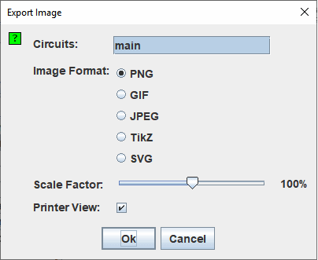

导出图像
当您选择 | 导出图像... | 时，Logisim 会显示一个包含四个选项的对话框。

配置导出
- 电路： 一个列表，您可以在其中选择一个或多个要导出到图像文件的电路。（空电路不显示为选项。）
- 图像格式： 您可以创建 PNG、GIF、JPEG、TikZ 和 SVG 文件。通常建议使用 PNG 文件：GIF 格式已经过时，JPEG 格式会引入伪影，因为 JPEG 格式实际上是为摄影图像设计的。
- 缩放比例：您可以使用此滑块调整导出到图像文件时的缩放比例。
- 打印视图：图像样式可以选择包含统计信息，或仅包含原理图。此选项也可在“打印视图”中配置，会改变工作区中的显示。
点击确定后，Logisim 将显示一个文件选择对话框。如果您只选择了一个电路，请选择要保存图像的文件。如果您选择了多个电路，请选择一个目录来保存文件；Logisim 会根据电路名称命名图像（例如 main.png）。